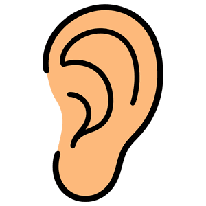
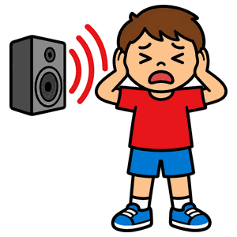
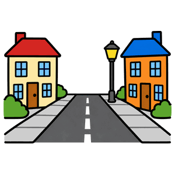
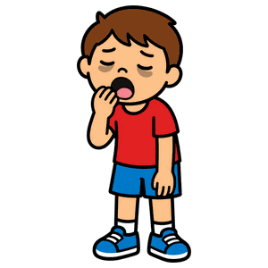

Gabinete Fönia

Un oído campeón
Si un oído oye muy poco o nada y el otro oye bien, se puede llevar una vida normal. Algunas situaciones cuestan más, pero suelen tener truco. Cinco niveles cortos para entenderlo jugando.
¿Qué oído oye bien?
Lo usamos para darte los trucos de tu lado. Si es para tu hijo o tu hija, elige su oído bueno.
No se guarda en ningún sitio: solo vale mientras tienes abierta esta página.
El mapa del sonido
La audiometría es un mapa de cómo oyes. Este es un ejemplo inventado, no el de nadie.
De izquierda a derecha, del sonido grave al agudo. De arriba abajo, cuánto tiene que sonar para oírlo: arriba se oye hasta lo más flojito y abajo hace falta mucho volumen. La X azul es el oído izquierdo y la O roja, el derecho.
1. En este ejemplo, ¿qué oído oye bien?
2. Una marca abajo del todo quiere decir…
3. Si pone «timpanograma tipo A» y «neurosensorial»…
Si ves corchetes [ ] o flechas < >, son pruebas por vía ósea: el sonido entra por el hueso.
Ponte en sus oídos
Ponte auriculares. La campana saldrá por la izquierda o por la derecha. Adivina de qué lado ha salido. Primero lo pruebas con dos oídos y después con un solo oído.
Ronda con dos oídos: 0 de 3
Este navegador no deja reproducir el sonido. No pasa nada: con un solo oído, saber de dónde viene un sonido se hace muy difícil, porque el cerebro compara lo que llega a cada oído.
Lo que más cuesta con un solo oído

Entender con ruido: bar, comedor, tele puesta
Saber de dónde viene un coche o quién te llama Hablar en grupo, sobre todo si hablan por el lado que no oye
Hablar en grupo, sobre todo si hablan por el lado que no oye
Cansarse antes: estar pendiente todo el rato agotaLas revisiones sobre sordera de un lado lo describen así: cuesta sobre todo cuando el sonido llega por el lado que no oye y cuando hay ruido (Stewart, Clark y Niparko 2011). En niños aumenta el riesgo de dificultades de lenguaje y en el colegio, así que conviene vigilar su desarrollo (Lieu 2018).
¿Dónde me pongo?
Elige dónde te conviene ponerte para que tu oído bueno, el izquierdo, oiga mejor.
Son consejos de buena práctica y de sentido común acústico. No hemos encontrado ensayos que comparen un truco con otro.
Cuida tu oído campeón
Es el oído que hace todo el trabajo. ¿Verdadero o falso?
Ayudas que puedes preguntar
Gira las cuatro cartas. Son para que sepas que existen y puedas preguntarlo al otorrino o al audiólogo; si alguna te encaja, lo decide el especialista contigo.
Conducción ósea en sordera de un lado: mejora entender con ruido y la calidad de vida, sin mejorar la localización (Kim y cols. 2017). En niños, CROS sin cirugía y con poco efecto en localizar; el implante, con más posibilidades de oír por los dos lados, sobre todo si se hace pronto en la sordera de nacimiento (De Seta y cols. 2026). Micrófonos remotos y entender con ruido (Andren y cols. 2023).
¡Oído campeón!
Tu frase para cuando haga falta:
Si te ha servido, a alguien de tu familia o del colegio también le servirá.
 Un material de ColmenIA, la comunidad de logopedas, maestros y familias.
Un material de ColmenIA, la comunidad de logopedas, maestros y familias.
De dónde sale esto (estudios)
- Stewart, Clark y Niparko 2011: doi:10.1159/000323589
- Lieu 2018: doi:10.1007/s40136-018-0185-5
- Kim y cols. 2017, revisión sistemática de conducción ósea: doi:10.1097/MAO.0000000000001359
- De Seta y cols. 2026, revisión sistemática en niños: doi:10.3390/audiolres16050129
- Piva de Freitas y cols. 2025, metaanálisis: doi:10.1016/j.bjorl.2025.101628
- Andren y cols. 2023: doi:10.1080/14670100.2023.2239512
- La Organización Mundial de la Salud recomienda limitar el volumen y el tiempo de escucha con auriculares.
Hemos leído los resúmenes de estos estudios, no el texto completo. Versión en texto para imprimir.
Esta página es informativa y no sustituye la consulta con el otorrino, el audiólogo o la logopeda.
 Gabinete Fönia · ColmenIA
Gabinete Fönia · ColmenIA
Hacemos materiales como este entre logopedas, maestros y familias.